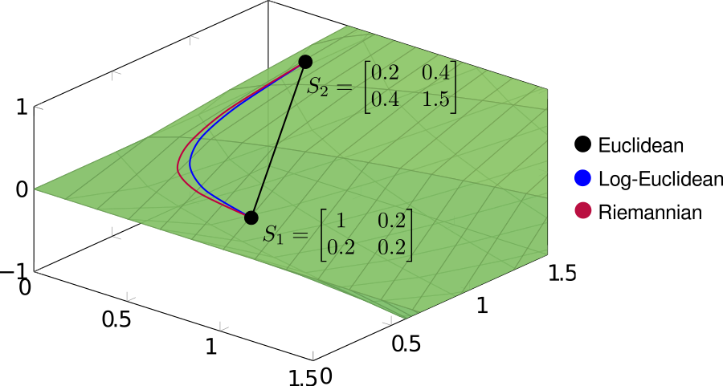

Interpolation of covariance matrices
Corson N. Areshenkoff
2024-10-01
interp_guide.Rmdspdm implements three forms of interpolation between
covariance matrices, using the function
spd.interpolate():
Euclidean interpolation (
method = 'euclidean'), defined byLog-Euclidean interpolation (
method = 'logeuclidean'), defined by where and denote the matrix exponential and matrix logarithm.Riemannian interpolation (
method = 'riemannian'), defined by where and denote the matrix exponential and matrix logarithm, and the subscript denotes the (Riemannian) exponential and log maps taken at the specified basepoint.
These three methods can be interpreted, respectively, as direct linear interpolation (euclidean), linear interpolation after projecting onto the tangent space at the identity matrix (log-euclidean), and geodesic interpolation (riemannian). In order to see the different behaviors of the three methods, it’s useful to draw the interpolating paths explicitly. In the following example, we’ll interpolate between two covariance matrices
using each of the three methods.
# Define source and target covariance matrices
S1 <- matrix(c(1, .2, .2, .2), 2, 2)
S2 <- matrix(c(.2, .4, .4, 1.5), 2, 2)
# Interpolate at equally spaced points
interp <- seq(0, 1, .2)
# Interpolation
path.euclidean <- lapply(interp, function(t)
spd.interpolate(S1, S2, t, method = 'euclidean'))
path.logeuclidean <- lapply(interp, function(t)
spd.interpolate(S1, S2, t, method = 'logeuclidean'))
path.riemannian <- lapply(interp, function(t)
spd.interpolate(S1, S2, t, method = 'riemannian'))The resulting paths are shown below on the cone of symmetric positive-definite matrices.

Note that both log-Euclidean and Riemannian interpolation produce curved paths. This seemingly undesirable behavior is actually a consequence of the geometry of the cone, the result of which being that standard (Euclidean) operations often distort the spectral properties of covariance matrices.
As discussed in another page I’ll eventually get around to writing, the positive cone is arranged as a set of nested shells of constant determinant, which (in a rough, intuitive sense) encode information about the dimensionality of a covariance matrix. For a fixed norm, the greatest determinant is achieved for the isotropic matrices $\sigma^2 \bf{I}$ at the center of the cone. The result is that linear interpolation between matrices lying on opposite sides of the cone generates paths passing through the center, into a zone of higher determinant. In contrast, both log-Euclidean and Riemannian interpolation produce paths which roughly follow an iso-determinant shell. We can see this by computing the determinant of the interpolating matrices:

Note that method = c('logeuclidean', 'riemannian') are
considerably slower than method = c('euclidean'), and are
not well optimized (e.g. interpolating at multiple steps requires
computing the exponential and logarithms multiple times), and so in
higher dimensions interpolating at a large numbers of timesteps can be
time consuming. This is a relatively simple fix, and will likely be
implemented shortly, but for now interpolating at multiple timesteps
must be done in a loop, or by using lapply().